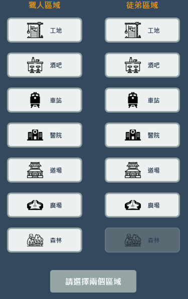
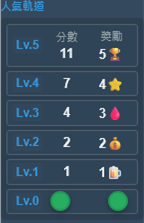
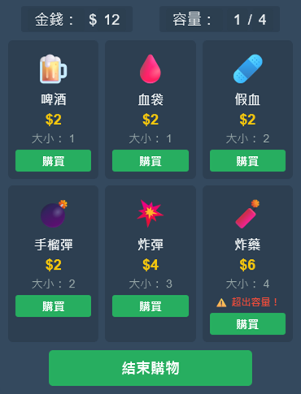
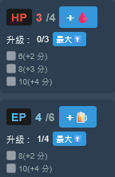
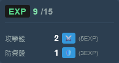
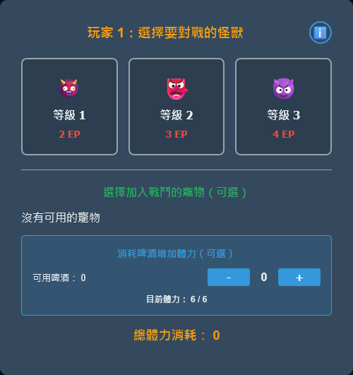
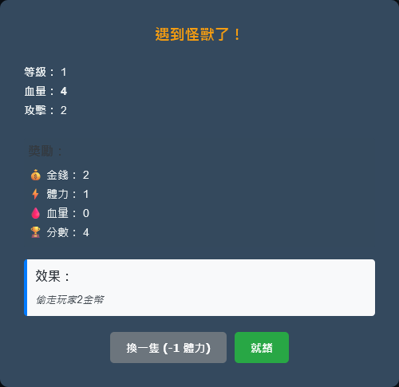
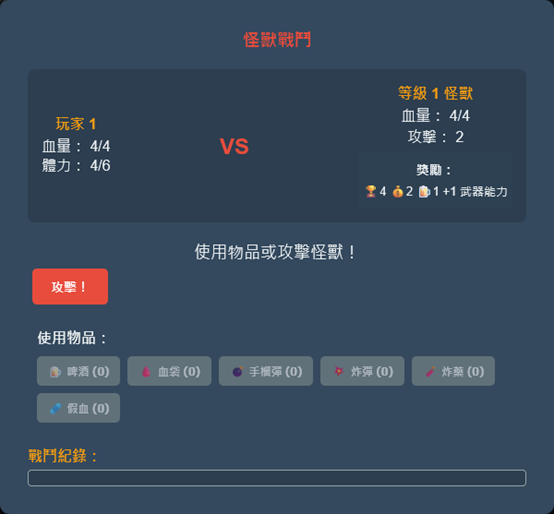
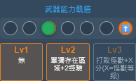

背景
玩家將扮演身手不凡的精英獵人，每位獵人都帶著自己的首席學徒，抵達一座急需救援的小鎮。城鎮旁的森林已被恐怖的怪獸侵佔，居民們終日生活在恐懼之中。
然而，隨著大批獵人湧入小鎮，他們的目的並不單純——除了提供援助，每個人都渴望贏得名聲與地位。在這個競爭激烈的環境下，究竟誰能脫穎而出，贏得大眾的喝采與榮耀？
目標
獲得最高分數的玩家獲勝。
遊戲結束條件: 當有任何玩家的分數達到 50 分（或以上）時，該輪結束後遊戲即宣告結束。
規則
遊戲流程
遊戲將進行多輪，直到觸發結束條件為止。 每一輪包含以下四個階段：
1. 區域選擇
2. 熱門獎勵
3. 資源使用
4. 戰鬥
1. 區域選擇
所有玩家同時私下選擇自己的「獵人」與「學徒」要前往的區域。可供前往的區域數量會根據玩家人數而有所不同。當所有人選擇完畢後同時揭開自己的選擇，並將所有標記物放置在主圖板上。
特殊規則： 當獵人與學徒同時選擇前往「森林」時，學徒可對怪獸造成1點傷害。在其他情況下，學徒前往森林不會獲得任何收益。

不同的區域提供各種不同的好處。在同一個區域的標記物越多，每位玩家所能獲得的收益就越少。
2. 熱門獎勵
若玩家的獵人獨自待在一個區域（該處沒有其他任何獵人或學徒），則可獲得額外的熱門獎勵。熱門軌分為兩個部分：右側為資源獎勵，左側為分數獎勵。
資源獎勵： 當獵人獨佔區域時，右側的「資源標記」會向上移動1格，玩家可獲得該位置以下的所有獎勵。
分數獎勵： 若左側的「分數標記」位置較低，它會移動到與資源標記相同的高度，玩家立即獲得相應的分數。
注意：此規則不適用於森林。即便獵人獨自在森林中，也不會獲得任何熱門獎勵。

若玩家的獵人所在區域有其他標記物，「資源標記」會向下移動1格，而玩家依然可獲得該位置以下的所有獎勵。
3. 資源使用
此階段所有玩家同時決定如何使用其資源。在此階段結束後，所有玩家皆須進行容量檢查。



4. 戰鬥
此階段僅在森林中有獵人時才會執行。位於森林的玩家需選擇想要挑戰的怪獸等級。等級越高的怪獸越難擊敗，但提供的獎勵也越豐厚。選擇怪獸等級後，玩家必須支付相對應的 EP：
等級 1： 2 EP
等級 2： 3 EP
等級 3： 4 EP
若玩家擁有寵物，則必須支付額外的 EP：
寵物等級 1： 2 EP
寵物等級 2： 3 EP
寵物等級 3： 4 EP

接著，玩家決定要挑戰哪一隻特定的怪獸。系統會顯示該魔物的 HP、攻擊力、獎勵以及特殊效果。若玩家對當前目標不滿意，可以支付 1 EP 逃離該怪獸的領地，以查看下一隻怪獸。

一旦決定後，戰鬥階段正式開始。戰鬥階段中若有多名玩家進入森林，則會依序進行戰鬥，由分數最低的玩家先開始。
l 攻擊：玩家根據自身的攻擊力擲出相同數量的骰子。最終造成的傷害將根據武器的精準度來計算。若有寵物參戰，玩家每次攻擊都能獲得穩定的額外傷害輸出：
ü 寵物等級 1：+1 攻擊力
ü 寵物等級 2：+2 攻擊力
ü 寵物等級 3：+4 攻擊力
l 馴服：若此時怪獸的血量剩下1時，玩家可支付1 EP馴服牠，使其成為自己的寵物。

當玩家擊敗怪獸，將獲得分數與資源並且提升武器能力。足夠的武器能力將使玩家獲得新的技能。

獲得的武器能力等同於擊敗的怪獸等級。獲得2點武器能力可解鎖等級2的能力；獲得6點武器能力可解鎖等級3的能力。